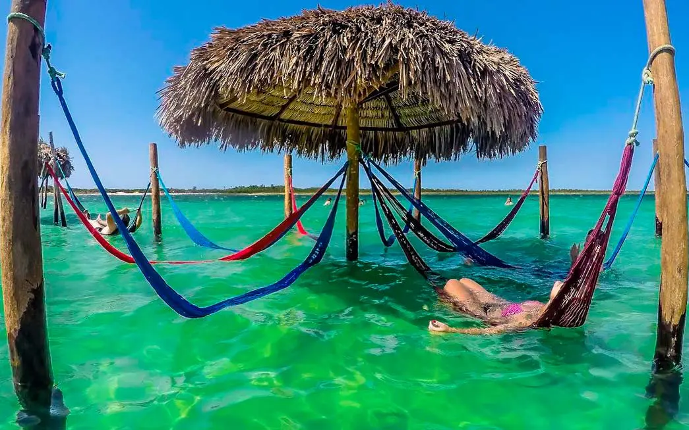
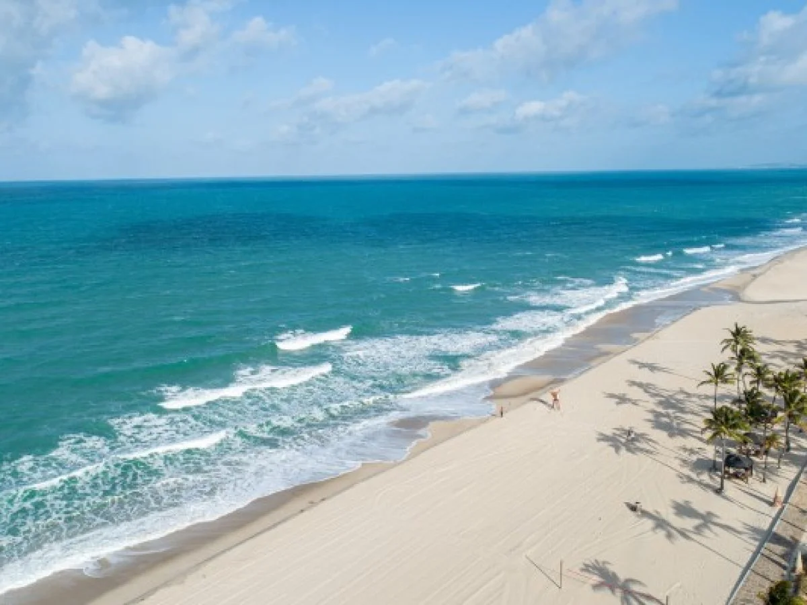
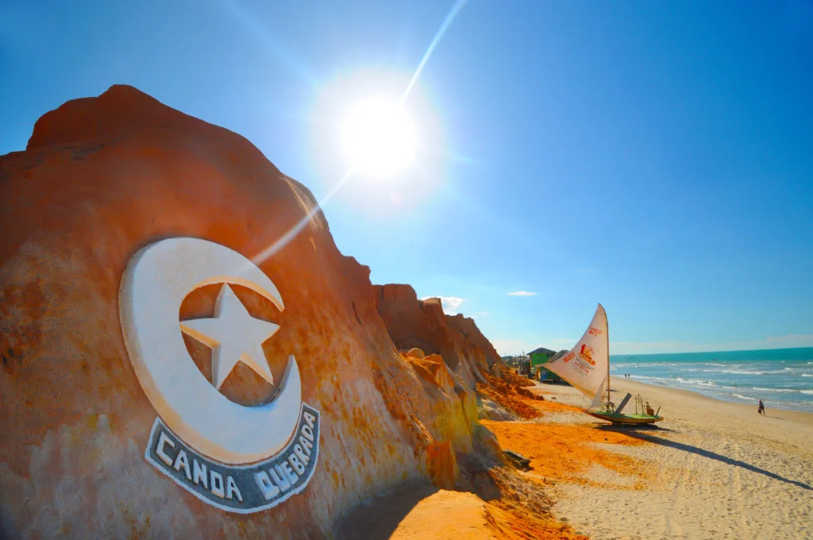

Jericoacoara
One of Brazil's most famous beach destinations, known for its dunes, lagoons, and spectacular sunsets.
Highlights
- Pedra Furada
- Sunset Dune
- Lagoa do Paraíso
- Kitesurfing
Discover some of the most breathtaking places in northeastern Brazil.

One of Brazil's most famous beach destinations, known for its dunes, lagoons, and spectacular sunsets.

One of Fortaleza's most visited beaches, famous for its beach clubs and vibrant atmosphere.

Famous for its red cliffs, buggy rides, and lively nightlife, Canoa Quebrada is one of Ceará's most iconic destinations.